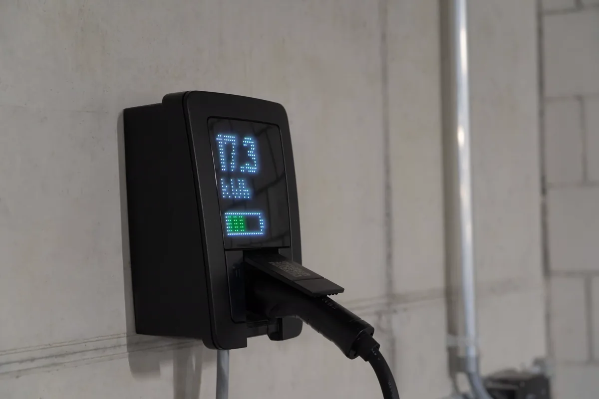

Carro elétrico em garagem mudou a conta de risco
A frota elétrica cresceu mais rápido que a infraestrutura dos prédios. O morador compra o veículo, quer carregar na vaga, e descobre que puxar um cabo do apartamento não resolve — nem do ponto de vista elétrico, nem do ponto de vista de segurança contra incêndio.
O motivo é o comportamento da bateria de íon-lítio em falha: aquecimento autossustentado, liberação de gases inflamáveis e tóxicos, dificuldade de extinção e possibilidade de reignição horas depois. Em garagem fechada, com pé-direito baixo e carros lado a lado, isso pede tratamento diferente do incêndio veicular convencional.
É esse conjunto que a Norma Técnica 23 do Corpo de Bombeiros Militar do Espírito Santo organiza, junto com as normas ABNT de instalações elétricas e de recarga veicular. Trabalhamos sempre contra o texto vigente da norma no momento do projeto, porque esse é um tema em revisão frequente.
O que a adequação envolve
Levantamento da capacidade elétrica
Antes de qualquer carregador: qual a potência disponível na entrada, o que o quadro geral suporta, como está o aterramento e qual a demanda já contratada. É comum que a infraestrutura de um prédio antigo não comporte vários pontos simultâneos — e é melhor saber disso agora que depois do terceiro morador instalado.
Projeto elétrico dos pontos de recarga
Circuito dedicado por ponto, quadro próprio, proteção contra sobrecorrente e proteção diferencial-residual adequada à recarga, dimensionamento de condutores e eletrodutos, aterramento e equipotencialização, e seccionamento de emergência acessível. Quando a capacidade é limitada, entra o gerenciamento de carga, que divide a potência disponível entre os pontos em vez de somar todos no pico.
Medição individualizada e regra de rateio
Cada ponto precisa medir o próprio consumo, sob pena de o condomínio inteiro pagar a recarga de alguns. A definição do modelo — medidor por vaga, sistema de gestão com relatório mensal — entra no projeto e na regra aprovada em assembleia.
Medidas de proteção contra incêndio
Posicionamento dos pontos em relação a rotas de fuga, escadas e áreas críticas; ventilação da garagem; detecção e alarme; sinalização específica; e acesso para o combate. A atualização do projeto de segurança contra incêndio da edificação segue o mesmo caminho descrito em combate a incêndio e em instalação e regularização de sistema de incêndio.
Documentação e vistoria
Memorial, projeto, ART registrada no CREA-ES e protocolo junto ao CBMES quando a edificação exigir análise. Em condomínio, tudo isso costuma entrar no plano de manutenção predial, com inspeção periódica dos pontos instalados.

Como conduzimos o serviço
Diagnóstico
Levantamento da entrada de energia, do quadro geral, do aterramento, da ventilação da garagem e da documentação de incêndio existente.
Estudo de viabilidade
Quantos pontos a infraestrutura comporta hoje, o que muda com gerenciamento de carga e qual o custo de cada etapa de expansão.
Projeto
Projeto elétrico dos pontos, medidas de proteção contra incêndio e atualização do projeto de segurança da edificação, com ART.
Execução e vistoria
Execução da infraestrutura, comissionamento, testes das proteções, sinalização e acompanhamento da vistoria do Corpo de Bombeiros.
Erros comuns na instalação de carregador em condomínio
| Erro | Consequência |
|---|---|
| Carregador ligado em circuito do apartamento por extensão | Sobrecarga, aquecimento de condutor e risco de incêndio na garagem |
| Instalação sem verificar a capacidade do quadro geral | Queda geral do prédio nos horários de pico de recarga |
| Proteção diferencial inadequada para recarga | Dispositivo não atua no tipo de corrente de fuga que ocorre na recarga |
| Ponto instalado em rota de fuga ou junto à escada | Compromete a evacuação exatamente no cenário em que ela é necessária |
| Sem medição individualizada | Rateio injusto e conflito recorrente em assembleia |
| Sem atualizar o projeto de incêndio | Reprovação na vistoria e problema com a seguradora em sinistro |
| Sem sinalização e sem seccionamento acessível | Equipe de emergência sem como cortar a energia rapidamente |
| Instalação sem ART e sem responsável técnico | Responsabilidade recai sobre o síndico em caso de acidente |
Para quem esse serviço costuma ser necessário
- Condomínios residenciais com moradores adquirindo veículos elétricos e híbridos plug-in;
- Edifícios comerciais e corporativos que oferecem recarga a colaboradores e visitantes;
- Shoppings, hotéis e supermercados que instalam recarga como serviço ao cliente;
- Frotas e centros de distribuição que eletrificaram parte da operação;
- Concessionárias e oficinas que passam a manter veículos elétricos em pátio coberto;
- Estacionamentos que querem oferecer recarga como diferencial.
Perguntas frequentes sobre recarga de veículo elétrico
Posso instalar um carregador de carro elétrico na minha vaga do condomínio?
Em geral sim, mas não como uma tomada comum puxada do apartamento. A instalação envolve área comum, capacidade do quadro geral, medição individualizada do consumo, e as exigências de segurança contra incêndio da edificação. O caminho correto passa por projeto elétrico, aprovação em assembleia com regra clara de rateio e de responsabilidade, e adequação conforme a norma técnica do Corpo de Bombeiros aplicável à edificação. Instalar sem isso costuma criar dois problemas: sobrecarga da infraestrutura existente e recusa na próxima vistoria.
Por que o Corpo de Bombeiros se envolve na recarga de veículo elétrico?
Porque o risco de incêndio muda. Bateria de íon-lítio em falha entra em um processo autossustentado de aquecimento, libera gases inflamáveis e tóxicos, é difícil de extinguir com água em quantidade normal e pode reacender horas depois. Em garagem fechada, com pé-direito baixo, ventilação limitada e veículos próximos, isso é um cenário diferente do incêndio veicular convencional. Por isso a adequação trata de localização do ponto, ventilação, detecção, sinalização, acesso para combate e proteção da edificação, e não apenas do cabo e do carregador.
O que a adequação costuma exigir na prática?
Os itens variam com o porte e a ocupação da edificação, e com a versão vigente da norma técnica, mas o conjunto usual é: circuito dedicado a partir de quadro próprio, com dispositivos de proteção contra sobrecorrente e contra corrente diferencial-residual adequados à recarga; aterramento verificado; seccionamento de emergência acessível; posicionamento dos pontos de recarga em relação a rotas de fuga e a áreas críticas; ventilação da garagem; detecção e alarme; sinalização específica; e atualização do projeto de segurança contra incêndio da edificação junto ao CBMES. A conferência é sempre feita contra o texto vigente da norma no momento do projeto.
Prédio antigo consegue se adequar?
Na maior parte dos casos sim, com estudo prévio. O ponto de partida é levantar a capacidade real da entrada de energia e do quadro geral, porque é comum que a infraestrutura existente não comporte vários carregadores simultâneos. A partir daí definem-se alternativas: sistema de gerenciamento de carga que limita a potência total, número de pontos por etapa, reforço de alimentação, ou solução com medição individualizada. É melhor descobrir isso em projeto do que depois de instalados os primeiros carregadores.
A adequação precisa de ART e de projeto aprovado?
Sim. É intervenção em instalação elétrica e em sistema de segurança contra incêndio de edificação, com responsabilidade técnica de engenheiro habilitado e ART registrada no CREA-ES. Quando a edificação já possui projeto de segurança contra incêndio aprovado, a inclusão dos pontos de recarga costuma exigir atualização e nova análise junto ao Corpo de Bombeiros.
Adequação para carro elétrico na Grande Vitória
Estudo, projeto e execução em condomínios, empresas e estacionamentos da região:
Moradores querendo instalar carregador?
Informe o número de vagas, a idade do prédio e a demanda contratada. Retornamos com estudo de viabilidade.